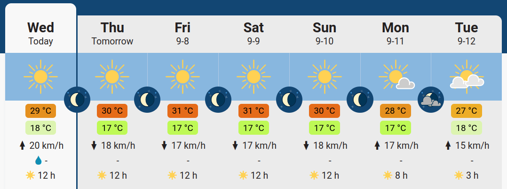

gantt
title HAX712X projects
axisFormat %d-%m
section Personal project
Weather Forecast App :active, 2023-09-22, 2023-11-15
Evaluation :active, milestone, 2023-11-16, 2023-11-16
section Team project
Research & Outlining :done, 2023-09-29, 2023-10-23
Midterm evaluation :done, milestone, 2023-10-23, 2023-10-23
Development :done, 2023-10-24, 2023-12-10
Final evaluation :done, milestone, 2023-12-15, 2023-12-15
2023-2024
1 General instructions
For this course, the grading consists of two projects:
- Main project: a long-term group project on air pollution in Occitanie (duration 2.5 months),
- Side project: a personal project to create a Weather Forecast App for Montpellier (duration 1.5 months).
You will need to work all along the semester to achieve these projects. Please start to work on it as soon as possible. You need to use your GitHub account (see Git lecture) as the expected outputs for this course are GitHub repositories.
2 Personal project: a weather forecast app
2.1 Setting and objectives
This is a personal project. This part corresponds to 20% of the final grade. The due date is November 16 (23:59).
The main objective of this project is to create:
- a GitHub repository containing all the code and documentation of your project
- a GitHub web page displaying images representing the weather forecast for the 4 next days (in Montpellier) that automatically updates. The website URL should be accessible in the README.md at the root of your Git repository.
- a short description of the methodology used, below the forecast itself.
Please provide this URL in the following survey https://framaforms.org/hax712x-depot-git-personnel-1693995810.
2.2 Guidelines
For this project, you need to create a GitHub repository with your code, and we suggest using GitHub action for the deployment phase (weather forecast update and website generation).
The data to be used for your project is to be obtained from open-meteo.com.
You have to create a simple webpage using a GitHub page and a GitHub action with
Quartofor instance; see https://quarto.org/docs/publishing/github-pages.html for details, and also the associatedymlhere. The webpage created will display the weather forecast in Montpellier for the next 4 days. For instance, it could display something like this:

Note
You should display the forecast together with the highest/lowest temperature for the day, wind average, and amount of precipitation. The closer you can reproduce something in the spirit of the previous illustration, the higher the grade.
An additional constraint is that the app should be autonomous once created, and should be automatically refreshed every day (like a real weather forecast website!). An example to help you in this task is available here (and the associated source code), updating time series on a monthly basis. For the automatic update and scheduling, see the schedule event description.
The only image format accepted is SVG. See examples from freesvg.org, creativecommons, clker, openclipart, etc.
The code must be structured, commented and properly formatted with the
blacklinter and followpep8convention. Guidance on this can be obtained here https://www.freecodecamp.org/news/auto-format-your-python-code-with-black/ or here for VSCode.
2.2.1 Grading details
| General | Details | Points |
|---|---|---|
| Git | GitHub page functional | 3 |
| Display the expected information | 4 | |
| GiHub page refreshed daily | 3 | |
| Work description | Clarity / Details | 2 |
| Easy to reproduce with text | 2 | |
| Code | Comments/Pep8 or Black | 2 |
| Structure of the code | 2 | |
| Graphical aspects and esthetic | 2 | |
| Total | 20 |
3 Team project: Air pollution data analysis in Occitanie
3.1 Setting and objectives
The group composition is available on Moodle.
No free-rider tolerated
The project repository must show a balanced contribution between group members and intra-group grade variation could be made to reflect issues on the intra-group workload balance.
The project consists of an investigation of the pollution in Occitanie, through the analysis of the following datasets at least:
Weather forecast: SYNOP data
Occitanie pollution datasets: Atmo Occitanie
It will be mostly a visualization project, hopefully an interactive one, with the creation of a website (as for the personal project), helping to navigate your work. The study could focus at least on the following time resolution: last month, last year and last 5 years, for several cities, and several pollutants.
3.2 Timing
Mid-term project snapshot: This part consists of starting the group project, explaining the main question of interest chosen to investigate. You should show preliminary work and organization of the workload, git first steps for the group project, etc. See details below Section 3.2.1. This part corresponds to 10% of the final grade. The due date is October 23 (23:59)
The GitHub repository with the presentations slides should be completed before Sunday 10 December (23:59). Nothing pushed after the deadline will be taken into account.
The oral presentation (15mn + 5mn questions) December 15 (8:00) (room: SC36.04).
3.2.1 Mid-term project snapshot
Please provide the URL of the group repository and the group composition (do not forget your student number) in the following survey https://framaforms.org/hax712x-groupes-1694612082.
The main point for this step is to create a README.qmd (maximum length: approximately 4 pages) in a roadmap directory at the root of your project. We will provide you feedback in the form of GitHub issues on your project repository. Your file should give the outline of the project with the following ingredients:
You have to choose a name for your project. Hereafter, it is denoted by
my_module_name.description of a minimum viable project, showing the architecture (website, files, classes, etc.). It does not have to be functional at this stage but must have the main files needed, details of the coding pipeline, choice of the packages/technologies used, etc.
Create simple pictures (possibly camera pictures of handmade drawings) showing the results you want to create (time series, maps, etc.).
Provide several git branches (at least 2) so the project can move forward independently.
Retro planning with a Gantt diagram as follows (see for instance Quarto and Mermaid):
gantt
title Preparing Polyglot Notebooks Talk for Stir Trek 2023
axisFormat %m-%d
section Proposal <br> and <br> Evaluation
Submit Abstract :done, 2023-01-15, 2023-02-18
Session Evaluation :done, EVAL, 2023-02-18, 2023-03-05
Talk Accepted :milestone, done, after EVAL,
section Talk <br> Preparation
Research & Outlining :done, OUTLINE, 2023-03-12, 9d
Create Mermaid Examples :done, MER_EXAMPLE, after OUTLINE, 5d
Write Mermaid Articles :active, MER_ART, after MER_EXAMPLE, 7d
Write Jupyter Articles : after MER_ART, 3d
section Delivery
Final Notebook :crit, NOTEBOOK, 2023-04-19, 7d
Rehearsal :crit, after NOTEBOOK, 2023-05-04
Stir Trek 2023 :milestone, crit, 2023-05-05, 1d
3.2.1.1 Elements expected / Grading
| General | Details | Points (out of 20) |
|---|---|---|
| Mid-term | Git / branches | 4 |
| Task affectation / Gantt chart | 4 | |
| Dataset choices / Download / Description | 4 | |
| Packages/software description for the project | 4 | |
| Figure of interest/narration | 4 | |
| Total | 20 |
3.2.2 Final project
3.2.2.1 General guidelines
The ultimate goal is to provide a Python project that builds a website with
quartoand presents your project. This website should be deployed automatically through GitHub actions. A description of the procedure will be needed (imagine you are addressing a user not aware of your package). An example of a project made in 2020, is available at https://github.com/tanglef/chaoseverywhere.It should contain all the aspects described below.
3.2.2.2 Website
You have to create a simple website using GitHub pages and a GitHub action with
Quartofor displaying your resultsAt least one of the pages should contain an interactive element (maps, widgets, etc.)
3.2.2.3 Project structure
All the code will be placed in a subdirectory called
/my_module_name(choosing your module name accordingly).A slide deck in quarto will be put in a
/slidedirectory of the repository. The latter will be a short presentation of the work that will be orally presented during 15mn in front of a jury, at the end of the project.
3.2.2.4 Git aspects
A
.gitignorethat prevents garbage files from being included in your project.Equilibrated commits in two branches should be done (e.g., in the development branch and the master one), and merged for the milestone day.
Your repository should contain a
README.md:- containing the title and a short description of the project
- the link to the website
- a code snippet to build the website
- authors list and a license description. See this website. A default choice could be MIT Licence.
3.2.2.5 Object programming aspects
You should code at least one
Pythonclass.Your
pythonproject should contain submodules. Each submodule will be devoted to a specific sub-task of your project. #### Dataset(s)The data used should be available in a way that the end user does not need to perform a manual download of any kind (use the
poochpackage or variants for instance).
3.2.2.6 Time/memory evaluation
- A full study of the time and memory footprint of the code produced will be provided for the whole pipeline used. Elements showing speed-up / memory savings you could find along the way would be also appreciated.
3.2.2.7 Documentation
Docstrings should be populated for every
pythonclass and function.Bonus points will be given if you create an API documentation using
sphinxfor instance.
3.2.2.8 Test and CI
- Provide unitary tests to check that the function you proposed satisfies the requirement you target.
- Implement a Continuous Integration solution with GitHub that runs your unitary test at each commit.
| General | Details | Points (/20) |
|---|---|---|
| Code | Problem Resolution | 6 |
| Readme/Comments/Pep8 | 1 | |
| Unit Tests/CI/Deploy: wheel | 1 | |
| Class (create at least 1 class) | 0.5 | |
| Reproducibility/Dataset loading | 1 | |
| Graphical aspects: Widgets, clickable map, etc. | 2.5 | |
| Time/Memory efficiency | 1 | |
| Documentation | 2 | |
| Oral | Slides (structure, spelling) | 2 |
| Clarity / lively presentation / Rhythm / Show | 3 | |
| Total· | 20 |